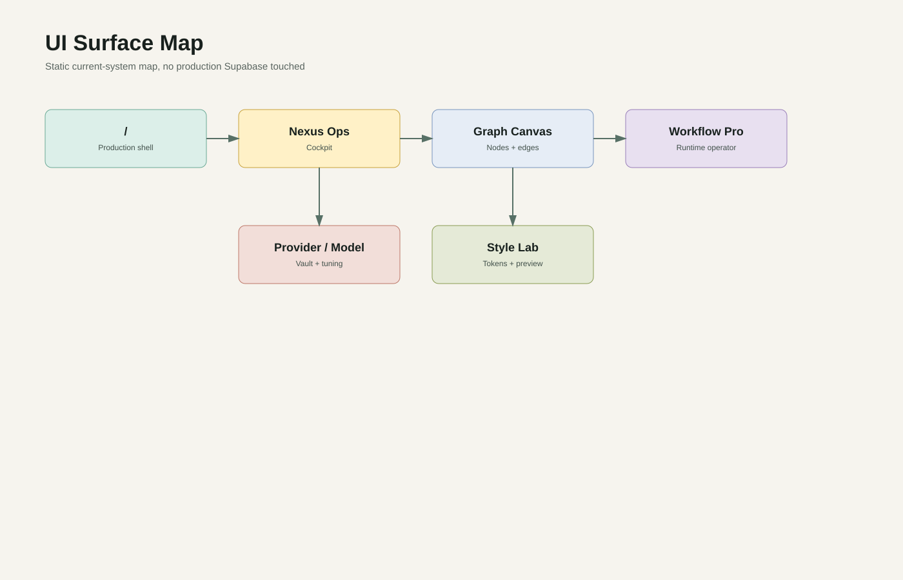
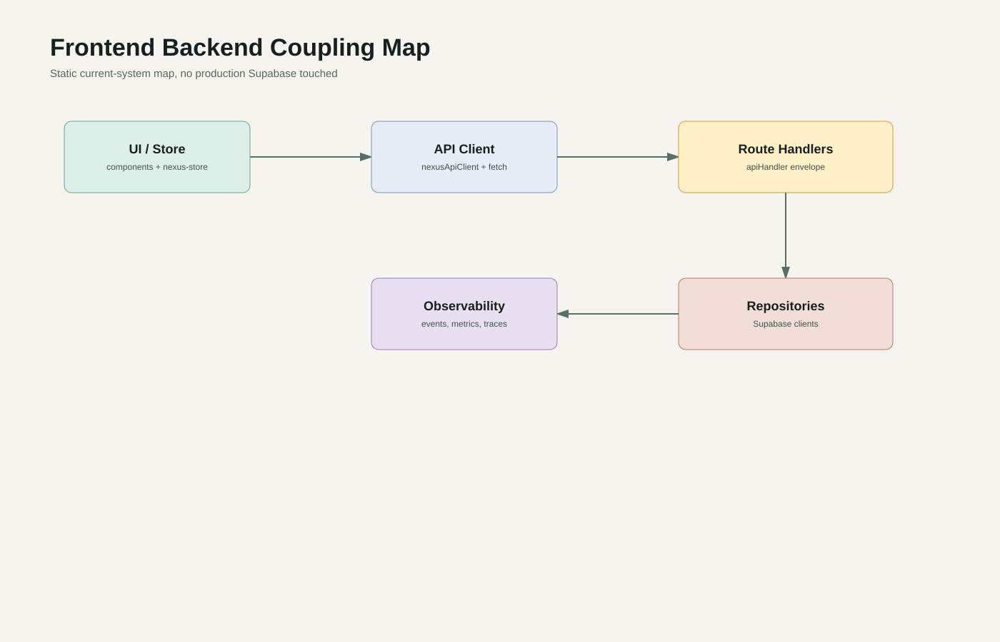
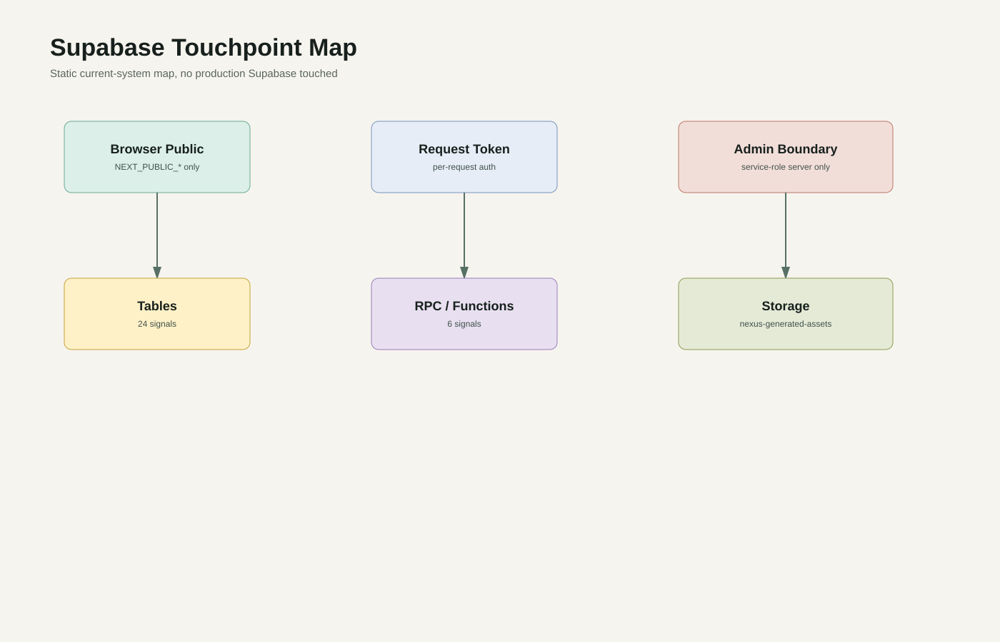

Executive Summary
NEXUS is currently a dense operator cockpit backed by a wide API control plane and a Supabase persistence spine. The main risk is not missing structure; it is that too many capabilities meet in a few oversized files.
Feature Capability Map
| Capability | Current abilities | Coupling risk |
|---|---|---|
| Input / Ingestion | Prompt/chat composer inputs; Attachment compiler registry; Local file scanner tool route; Web surfer tool route; Notebook/prompt inventory routes | medium: composer/store/tool routes cross several layers |
| LLM Node | Agent stream service; Memory compression; Predictive intel; Workflow Brain draft; Provider status/verify; Image model access | high where UI settings, env, provider registry, and route handlers meet |
| Workflow Orchestration | Workflow Pro surface; Runtime Lite runner/state; Runtime trace API; Workflow group records; Brain proposal review/apply | high: graph UI, store, runtime, traces, and artifacts are interwoven |
| Graph / Canvas | Graph canvas; Workflow node/edge manipulation; Runtime node definitions; Graph Brain planner | high in canvas + workflow + store convergence |
| Output / Report | Artifacts and versions; Artifact references; Generated image assets; Post-processing/storage; Reports in docs | medium-high: storage/service role boundary must stay server-only |
| Agent Context | Agent messages; Memory records; Branch modal/context compression; Historical paging | medium: history/auth/RLS must align |
| Supabase Persistence | Workspace snapshots; State entities; Sync operations; Artifacts; Observability; Prompts/notebooks/messages; RLS migrations | high: direct sync bridge and server repositories need boundary discipline |
| Visual / UI Layer | Production shell style runtime; Style lab; Style validators; Page shell feature registry; Preview/preflight | medium-high due to style lab file size and production preview boundary |
| Extension / Plugin Layer | Nexus registry; Tool slot registry; Provider adapters; Workflow node registry; Attachment compiler registry; Feature flags | medium: some registry checks are server-side, some UI references remain direct |
| Settings / Configuration | Provider vault/status; Model tuning; Feature flags; Deployment checks; Public config | medium-high: config surfaces can accidentally expose provider/security state |
| Debug / Diagnostics | Health route; System status; Observability events/metrics/traces; Deployment safety checks; Auth boundary scans | medium: diagnostics must stay sanitized |
Route and Page Map
| Route | Type | Methods | Purpose |
|---|---|---|---|
| /api/agent-stream | route-handler | POST | Agent runtime, memory, stream, messages, or task behavior. |
| /api/image-gen/assets/[assetId] | route-handler | GET | Image generation and generated asset behavior. |
| /api/image-gen | route-handler | POST | Image generation and generated asset behavior. |
| /api/memory-compress | route-handler | POST | Agent runtime, memory, stream, messages, or task behavior. |
| /api/predictive-intel | route-handler | POST | Route handler or app entry requiring source-level review. |
| /api/system-status | route-handler | GET | Health/status diagnostics. |
| /api/tools/fs-scanner | route-handler | GET, POST | Tool execution or legacy local tool behavior. |
| /api/tools/web-surfer | route-handler | GET, POST | Tool execution or legacy local tool behavior. |
| /api/v1/agents/[agentId]/memory | route-handler | GET | Agent runtime, memory, stream, messages, or task behavior. |
| /api/v1/agents/[agentId]/messages/archive | route-handler | POST | Agent runtime, memory, stream, messages, or task behavior. |
| /api/v1/agents/[agentId]/messages | route-handler | GET | Agent runtime, memory, stream, messages, or task behavior. |
| /api/v1/agents/[agentId]/stream | route-handler | POST | Agent runtime, memory, stream, messages, or task behavior. |
| /api/v1/agents/[agentId]/tasks/[taskId]/cancel | route-handler | POST | Agent runtime, memory, stream, messages, or task behavior. |
| /api/v1/agents/[agentId]/tasks/[taskId] | route-handler | GET | Agent runtime, memory, stream, messages, or task behavior. |
| /api/v1/agents/[agentId]/tasks | route-handler | POST | Agent runtime, memory, stream, messages, or task behavior. |
| /api/v1/agents/memory-compress | route-handler | POST | Agent runtime, memory, stream, messages, or task behavior. |
| /api/v1/artifacts/[artifactId]/archive | route-handler | POST | Artifact persistence, versions, references, assets, or archival behavior. |
| /api/v1/artifacts/[artifactId]/asset | route-handler | GET | Artifact persistence, versions, references, assets, or archival behavior. |
| /api/v1/artifacts/[artifactId]/references | route-handler | POST | Artifact persistence, versions, references, assets, or archival behavior. |
| /api/v1/artifacts/[artifactId] | route-handler | GET | Artifact persistence, versions, references, assets, or archival behavior. |
| /api/v1/artifacts/[artifactId]/versions | route-handler | POST | Artifact persistence, versions, references, assets, or archival behavior. |
| /api/v1/artifacts | route-handler | GET, POST | Artifact persistence, versions, references, assets, or archival behavior. |
| /api/v1/deployment/checks/latest | route-handler | GET | Route handler or app entry requiring source-level review. |
| /api/v1/deployment/checks/run | route-handler | POST | Route handler or app entry requiring source-level review. |
| /api/v1/feature-flags/[flagKey]/toggle | route-handler | POST | Feature flag listing or toggling behavior. |
| /api/v1/feature-flags | route-handler | GET | Feature flag listing or toggling behavior. |
| /api/v1/health | route-handler | GET | Health/status diagnostics. |
| /api/v1/notebooks | route-handler | GET | Route handler or app entry requiring source-level review. |
| /api/v1/observability/events | route-handler | GET | Observability event, metric, or trace retrieval. |
| /api/v1/observability/metrics | route-handler | GET | Observability event, metric, or trace retrieval. |
| /api/v1/observability/traces/[traceId] | route-handler | GET | Observability event, metric, or trace retrieval. |
| /api/v1/prompts | route-handler | GET | Route handler or app entry requiring source-level review. |
| /api/v1/providers/status | route-handler | GET | Provider status or credential verification behavior. |
| /api/v1/providers/verify | route-handler | POST | Provider status or credential verification behavior. |
| /api/v1/public-config | route-handler | GET | Route handler or app entry requiring source-level review. |
| /api/v1/sync/operations/[operationId]/cancel | route-handler | POST | Durable sync operation or status behavior. |
| /api/v1/sync/operations/[operationId]/retry | route-handler | POST | Durable sync operation or status behavior. |
| /api/v1/sync/operations | route-handler | POST | Durable sync operation or status behavior. |
| /api/v1/sync/status | route-handler | GET | Durable sync operation or status behavior. |
| /api/v1/tool-runs/[toolRunId]/cancel | route-handler | POST | Route handler or app entry requiring source-level review. |
| /api/v1/tool-runs/[toolRunId]/confirm | route-handler | POST | Route handler or app entry requiring source-level review. |
| /api/v1/tool-runs/[toolRunId] | route-handler | GET | Route handler or app entry requiring source-level review. |
| /api/v1/tool-runs | route-handler | GET | Route handler or app entry requiring source-level review. |
| /api/v1/tools/[toolId]/run | route-handler | POST | Tool execution or legacy local tool behavior. |
| /api/v1/workflows/groups | route-handler | POST | Workflow Pro orchestration, runtime trace, group records, or Brain draft behavior. |
| /api/v1/workflows/runtime-trace | route-handler | POST | Workflow Pro orchestration, runtime trace, group records, or Brain draft behavior. |
| /api/v1/workspaces/[workspaceId]/state | route-handler | GET, PUT | Workspace session, state, recovery, or permission behavior. |
| /api/v1/workspaces/recovery/[workspaceId] | route-handler | GET | Workspace session, state, recovery, or permission behavior. |
| /api/v1/workspaces/recovery/latest | route-handler | GET | Workspace session, state, recovery, or permission behavior. |
| /api/v1/workspaces/recovery | route-handler | GET | Workspace session, state, recovery, or permission behavior. |
| /api/v1/workspaces/session | route-handler | POST | Workspace session, state, recovery, or permission behavior. |
| /api/workflow-pro/brain-draft | route-handler | POST | Workflow Pro orchestration, runtime trace, group records, or Brain draft behavior. |
| / | layout | - | Primary NEXUS operations cockpit entry. |
| / | page | - | Primary NEXUS operations cockpit entry. |
| /style-lab | page | - | Style system laboratory and visual runtime workbench. |
UI Surface Map

| Surface | Role | Controls | Risk |
|---|---|---|---|
| NEXUS production shell | primary app entry | 0 | P3 static map only |
| Style Lab route | style workbench entry | 0 | P3 static map only |
| Root layout | shared app providers and global shell | 0 | P3 static map only |
| Nexus Ops cockpit | primary dense operator surface | 296 | P1 write/privilege review |
| Graph canvas | workflow graph/canvas surface | 43 | P1 write/privilege review |
| Workflow Pro surface | workflow construction and runtime operator surface | 34 | P1 write/privilege review |
| Style system lab | style/token/preview workbench | 91 | P1 write/privilege review |
| Nexus global store | state layer, not visible UI | 6 | P1 write/privilege review |
| State sync bridge | local/cloud sync layer, not visible UI | 0 | P1 write/privilege review |
| nexus-registry | supporting surface or logic module | 0 | P3 static map only |
| registry | supporting surface or logic module | 0 | P3 static map only |
| runner | supporting surface or logic module | 0 | P1 write/privilege review |
| AgentBranchModal | supporting surface or logic module | 19 | P1 write/privilege review |
| DatapadWindow | supporting surface or logic module | 6 | P1 write/privilege review |
| PromptVaultManager | supporting surface or logic module | 14 | P1 write/privilege review |
| auth-screen | supporting surface or logic module | 4 | P2 integration review |
| dynamic-icon | supporting surface or logic module | 0 | P3 static map only |
| nexus-agent-branch-modal-shell-selector.test | supporting surface or logic module | 12 | P2 integration review |
| nexus-agent-window-chrome-primitive.test | supporting surface or logic module | 0 | P2 integration review |
| nexus-command-palette-shell-selector.test | supporting surface or logic module | 1 | P3 static map only |
| nexus-control-primitive-selector.test | supporting surface or logic module | 3 | P3 static map only |
| nexus-datapad-shell-selector.test | supporting surface or logic module | 3 | P1 write/privilege review |
| nexus-generated-history-hydration.test | supporting surface or logic module | 2 | P2 integration review |
| nexus-message-bubble-primitive.test | supporting surface or logic module | 0 | P2 integration review |
| Nexus Ops cockpit | primary dense operator surface | 0 | P2 integration review |
| Nexus Ops cockpit | primary dense operator surface | 0 | P3 static map only |
| Nexus Ops cockpit | primary dense operator surface | 2 | P1 write/privilege review |
| Nexus Ops cockpit | primary dense operator surface | 0 | P2 integration review |
| Nexus Ops cockpit | primary dense operator surface | 0 | P3 static map only |
| Nexus Ops cockpit | primary dense operator surface | 4 | P2 integration review |
| Nexus Ops cockpit | primary dense operator surface | 0 | P3 static map only |
| Nexus Ops cockpit | primary dense operator surface | 3 | P2 integration review |
| Nexus Ops cockpit | primary dense operator surface | 0 | P3 static map only |
| nexus-production-page-shell-boundary.test | supporting surface or logic module | 0 | P2 integration review |
| nexus-production-page-shell-boundary | supporting surface or logic module | 0 | P3 static map only |
| nexus-production-preview-controller.test | supporting surface or logic module | 0 | P1 write/privilege review |
| nexus-production-preview-controller | supporting surface or logic module | 4 | P1 write/privilege review |
| nexus-production-style-layer-contract.test | supporting surface or logic module | 35 | P1 write/privilege review |
| nexus-theme-panel-live-style-controls.test | supporting surface or logic module | 85 | P1 write/privilege review |
| nexus-workspace-chat-composer-shell.test | supporting surface or logic module | 1 | P1 write/privilege review |
| nexus-workspace-primitive.test | supporting surface or logic module | 0 | P2 integration review |
| nexus-workspace-readonly-gate.test | supporting surface or logic module | 0 | P1 write/privilege review |
| nexus-workspace-style-payload-export-import.test | supporting surface or logic module | 0 | P2 integration review |
| Workflow Pro surface | workflow construction and runtime operator surface | 3 | P3 static map only |
| Style system lab | style/token/preview workbench | 9 | P1 write/privilege review |
| Style system lab | style/token/preview workbench | 0 | P1 write/privilege review |
| Style system lab | style/token/preview workbench | 1 | P1 write/privilege review |
| nexus-style-runtime-provider | supporting surface or logic module | 0 | P1 write/privilege review |
Component Inventory
| File | Lines | Components | Large |
|---|---|---|---|
| src/components/nexus/AgentBranchModal.tsx | 490 | AgentBranchModal, DEFAULT_PROFILE | no |
| src/components/nexus/DatapadWindow.tsx | 157 | DatapadWindow | no |
| src/components/nexus/PromptVaultManager.tsx | 323 | PromptVaultManager | no |
| src/components/nexus/auth-screen.tsx | 171 | AUTH_PROMPT_MESSAGE, AuthScreen, CHECKING_SESSION_MESSAGE | no |
| src/components/nexus/dynamic-icon.tsx | 42 | DynamicIcon, Icon | no |
| src/components/nexus/nexus-agent-branch-modal-shell-selector.test.ts | 95 | AgentBranchModal | no |
| src/components/nexus/nexus-agent-window-chrome-primitive.test.ts | 119 | AgentWindow, SandboxCanvas | no |
| src/components/nexus/nexus-command-palette-shell-selector.test.ts | 125 | CommandPalette | no |
| src/components/nexus/nexus-control-primitive-selector.test.ts | 57 | - | no |
| src/components/nexus/nexus-datapad-shell-selector.test.ts | 94 | DatapadWindow | no |
| src/components/nexus/nexus-generated-history-hydration.test.ts | 15 | - | no |
| src/components/nexus/nexus-graph.tsx | 2346 | AgentNode, BlueprintEdge, FileRuntimeEditor, InputTextRuntimeEditor | yes |
| src/components/nexus/nexus-message-bubble-primitive.test.ts | 97 | MessageBubble, WorkspaceChatComposerShell | no |
| src/components/nexus/nexus-ops-body-frame.test.tsx | 110 | - | no |
| src/components/nexus/nexus-ops-body-frame.tsx | 19 | NexusOpsBodyFrame | no |
| src/components/nexus/nexus-ops-extraction-map.test.ts | 135 | - | no |
| src/components/nexus/nexus-ops-outer-shell-frame.test.tsx | 131 | - | no |
| src/components/nexus/nexus-ops-outer-shell-frame.tsx | 16 | NexusOpsOuterShellFrame | no |
| src/components/nexus/nexus-ops-right-floating-dock-frame.test.tsx | 147 | - | no |
| src/components/nexus/nexus-ops-right-floating-dock-frame.tsx | 21 | NexusOpsRightFloatingDockFrame | no |
| src/components/nexus/nexus-ops-top-bar-frame.test.tsx | 146 | - | no |
| src/components/nexus/nexus-ops-top-bar-frame.tsx | 26 | NexusOpsTopBarFrame | no |
| src/components/nexus/nexus-ops.tsx | 9654 | AgentActionToolbar, AgentModelTuningPanel, AgentSettingsSidebar, AgentTemplateProfilePanel | yes |
| src/components/nexus/nexus-production-page-shell-boundary.test.tsx | 105 | - | no |
| src/components/nexus/nexus-production-page-shell-boundary.tsx | 32 | NEXUS_PRODUCTION_PAGE_SHELL_BOUNDARY_VERSION_V1, NEXUS_PRODUCTION_PAGE_SHELL_IDS_V1, NexusProductionPageShellBoundary | no |
| src/components/nexus/nexus-production-preview-controller.test.ts | 76 | - | no |
| src/components/nexus/nexus-production-preview-controller.tsx | 460 | NexusProductionPreviewController | no |
| src/components/nexus/nexus-production-style-layer-contract.test.ts | 149 | NEXUS_PRODUCTION_PREVIEW_FIRST_CUT_TARGET_SELECTOR | no |
| src/components/nexus/nexus-theme-panel-live-style-controls.test.ts | 333 | WorkspaceStyleControlsPanel | no |
| src/components/nexus/nexus-workspace-chat-composer-shell.test.ts | 231 | - | no |
| src/components/nexus/nexus-workspace-primitive.test.ts | 75 | - | no |
| src/components/nexus/nexus-workspace-readonly-gate.test.ts | 33 | - | no |
| src/components/nexus/nexus-workspace-style-payload-export-import.test.ts | 88 | - | no |
| src/components/nexus/workflow-pro/workflow-pro-surface.test.tsx | 237 | - | no |
| src/components/nexus/workflow-pro/workflow-pro-surface.tsx | 1722 | WorkflowProActiveModeBay, WorkflowProActiveModeDetails, WorkflowProBrainProposalIntake, WorkflowProCapabilityRegistry | yes |
| src/components/style-engine/nexus-style-lab-imported-workspace-style.test.ts | 133 | - | no |
| src/components/style-engine/nexus-style-lab-production-chrome-smoke.test.ts | 108 | - | no |
| src/components/style-engine/nexus-style-lab-surface-style-coverage.test.ts | 325 | - | no |
| src/components/style-engine/nexus-style-lab.tsx | 5966 | Icon, NexusStyleLab | yes |
| src/components/style-engine/nexus-style-runtime-provider.tsx | 148 | NexusStyleRuntimeContext, NexusStyleRuntimeProvider | no |
| src/components/theme-provider.tsx | 19 | ThemeProvider | no |
State and Store Map
Mapped store entries: 260. Full data: store-read-write-map.json.
Frontend Backend Coupling Map

| Layer | Feature | Risk | Source |
|---|---|---|---|
| route-handler | Input / Ingestion | P1 write/privilege review | src/app/api/image-gen/route.test.ts |
| route-handler | Input / Ingestion | P1 write/privilege review | src/app/api/image-gen/route.ts |
| route-handler | LLM Node | P1 write/privilege review | src/app/api/memory-compress/route.ts |
| route-handler | Input / Ingestion | P1 write/privilege review | src/app/api/predictive-intel/route.ts |
| route-handler | Workflow Orchestration | P2 integration review | src/app/api/v1/agents/[agentId]/memory/route.ts |
| route-handler | Workflow Orchestration | P1 write/privilege review | src/app/api/v1/agents/[agentId]/messages/archive/route.ts |
| route-handler | Workflow Orchestration | P2 integration review | src/app/api/v1/agents/[agentId]/messages/route.ts |
| route-handler | LLM Node | P1 write/privilege review | src/app/api/v1/agents/[agentId]/stream/route.ts |
| route-handler | Workflow Orchestration | P1 write/privilege review | src/app/api/v1/agents/[agentId]/tasks/[taskId]/cancel/route.ts |
| route-handler | Workflow Orchestration | P2 integration review | src/app/api/v1/agents/[agentId]/tasks/[taskId]/route.ts |
| route-handler | Workflow Orchestration | P1 write/privilege review | src/app/api/v1/agents/[agentId]/tasks/route.ts |
| route-handler | LLM Node | P2 integration review | src/app/api/v1/agents/memory-compress/route.ts |
| route-handler | Workflow Orchestration | P1 write/privilege review | src/app/api/v1/artifacts/[artifactId]/archive/route.ts |
| route-handler | Workflow Orchestration | P1 write/privilege review | src/app/api/v1/artifacts/[artifactId]/references/route.ts |
| route-handler | Workflow Orchestration | P2 integration review | src/app/api/v1/artifacts/[artifactId]/route.ts |
| route-handler | Workflow Orchestration | P1 write/privilege review | src/app/api/v1/artifacts/[artifactId]/versions/route.ts |
| route-handler | Workflow Orchestration | P1 write/privilege review | src/app/api/v1/artifacts/route.ts |
| route-handler | Workflow Orchestration | P1 write/privilege review | src/app/api/v1/deployment/checks/latest/route.ts |
| route-handler | Workflow Orchestration | P1 write/privilege review | src/app/api/v1/deployment/checks/run/route.ts |
| route-handler | Workflow Orchestration | P1 write/privilege review | src/app/api/v1/feature-flags/[flagKey]/toggle/route.ts |
| route-handler | Workflow Orchestration | P2 integration review | src/app/api/v1/feature-flags/route.ts |
| route-handler | Workflow Orchestration | P2 integration review | src/app/api/v1/health/route.ts |
| route-handler | Workflow Orchestration | P2 integration review | src/app/api/v1/notebooks/route.ts |
| route-handler | Workflow Orchestration | P2 integration review | src/app/api/v1/observability/events/route.ts |
| route-handler | LLM Node | P2 integration review | src/app/api/v1/observability/metrics/route.ts |
| route-handler | Workflow Orchestration | P2 integration review | src/app/api/v1/observability/traces/[traceId]/route.ts |
| route-handler | Input / Ingestion | P2 integration review | src/app/api/v1/prompts/route.ts |
| route-handler | LLM Node | P3 static map only | src/app/api/v1/providers/status/route.test.ts |
| route-handler | LLM Node | P3 static map only | src/app/api/v1/providers/status/route.ts |
| route-handler | LLM Node | P1 write/privilege review | src/app/api/v1/providers/verify/route.ts |
| route-handler | Workflow Orchestration | P2 integration review | src/app/api/v1/public-config/route.ts |
| route-handler | Workflow Orchestration | P1 write/privilege review | src/app/api/v1/sync/operations/[operationId]/cancel/route.ts |
| route-handler | Workflow Orchestration | P1 write/privilege review | src/app/api/v1/sync/operations/[operationId]/retry/route.ts |
| route-handler | Workflow Orchestration | P1 write/privilege review | src/app/api/v1/sync/operations/route.ts |
| route-handler | Workflow Orchestration | P2 integration review | src/app/api/v1/sync/status/route.ts |
| route-handler | Workflow Orchestration | P1 write/privilege review | src/app/api/v1/tool-runs/[toolRunId]/cancel/route.ts |
| route-handler | LLM Node | P1 write/privilege review | src/app/api/v1/tool-runs/[toolRunId]/confirm/route.ts |
| route-handler | Workflow Orchestration | P2 integration review | src/app/api/v1/tool-runs/[toolRunId]/route.ts |
| route-handler | Workflow Orchestration | P2 integration review | src/app/api/v1/tool-runs/route.ts |
| route-handler | LLM Node | P1 write/privilege review | src/app/api/v1/tools/[toolId]/run/route.ts |
| route-handler | Input / Ingestion | P1 write/privilege review | src/app/api/v1/workflows/groups/route.ts |
| route-handler | Input / Ingestion | P1 write/privilege review | src/app/api/v1/workflows/runtime-trace/route.ts |
| route-handler | Workflow Orchestration | P1 write/privilege review | src/app/api/v1/workspaces/[workspaceId]/state/route.ts |
| route-handler | Workflow Orchestration | P1 write/privilege review | src/app/api/v1/workspaces/recovery/[workspaceId]/route.ts |
| route-handler | Workflow Orchestration | P1 write/privilege review | src/app/api/v1/workspaces/recovery/latest/route.ts |
| route-handler | Workflow Orchestration | P2 integration review | src/app/api/v1/workspaces/recovery/route.ts |
| route-handler | Workflow Orchestration | P1 write/privilege review | src/app/api/v1/workspaces/session/route.ts |
| route-handler | LLM Node | P1 write/privilege review | src/app/api/workflow-pro/brain-draft/route.ts |
| ui-component | Input / Ingestion | P2 integration review | src/components/nexus/auth-screen.tsx |
| ui-component | LLM Node | P1 write/privilege review | src/components/nexus/nexus-graph.tsx |
| ui-component | Workflow Orchestration | P1 write/privilege review | src/components/nexus/nexus-ops-extraction-map.test.ts |
| ui-component | LLM Node | P1 write/privilege review | src/components/nexus/nexus-ops.tsx |
| ui-component | Input / Ingestion | P1 write/privilege review | src/components/nexus/nexus-workspace-chat-composer-shell.test.ts |
| ui-component | Workflow Orchestration | P1 write/privilege review | src/components/style-engine/nexus-style-lab-surface-style-coverage.test.ts |
| ui-component | Graph / Canvas | P1 write/privilege review | src/components/style-engine/nexus-style-lab.tsx |
| shared-lib | Input / Ingestion | P2 integration review | src/lib/adapters/image-adapter.test.ts |
| shared-lib | Input / Ingestion | P1 write/privilege review | src/lib/adapters/image-adapter.ts |
| shared-lib | LLM Node | P2 integration review | src/lib/adapters/memory-compression-adapter.ts |
| shared-lib | Workflow Orchestration | P2 integration review | src/lib/api/nexus-api-client.ts |
| backend-service-repository | LLM Node | P1 write/privilege review | src/lib/backend/api/agent-stream-service.ts |
| backend-service-repository | LLM Node | P2 integration review | src/lib/backend/api/api-auth-test-helper.ts |
| backend-service-repository | Agent Context | P2 integration review | src/lib/backend/api/api-contract-service.ts |
| backend-service-repository | Input / Ingestion | P1 write/privilege review | src/lib/backend/api/api-contract.test.ts |
| backend-service-repository | Workflow Orchestration | P1 write/privilege review | src/lib/backend/api/api-handler.ts |
| backend-service-repository | Input / Ingestion | P1 write/privilege review | src/lib/backend/api/idempotency-repository.ts |
| backend-service-repository | LLM Node | P2 integration review | src/lib/backend/api/memory-compress-service.ts |
| backend-service-repository | Input / Ingestion | P1 write/privilege review | src/lib/backend/artifacts/artifact-repository.ts |
| backend-service-repository | LLM Node | P1 write/privilege review | src/lib/backend/artifacts/artifact-service.test.ts |
| backend-service-repository | Supabase Persistence | P2 integration review | src/lib/backend/contracts/layering.ts |
| backend-service-repository | Input / Ingestion | P1 write/privilege review | src/lib/backend/deployment/deployment-check-service.ts |
| backend-service-repository | LLM Node | P1 write/privilege review | src/lib/backend/deployment/environment-validator.ts |
| backend-service-repository | Input / Ingestion | P1 write/privilege review | src/lib/backend/deployment/feature-flag-service.ts |
| backend-service-repository | Input / Ingestion | P1 write/privilege review | src/lib/backend/history/agent-memory-record-repository.ts |
| backend-service-repository | Output / Report | P2 integration review | src/lib/backend/history/historical-data-fetcher.ts |
| backend-service-repository | LLM Node | P1 write/privilege review | src/lib/backend/history/message-history-service.test.ts |
| backend-service-repository | Input / Ingestion | P1 write/privilege review | src/lib/backend/history/message-repository.ts |
| backend-service-repository | Input / Ingestion | P1 write/privilege review | src/lib/backend/history/storage-partition-service.ts |
| backend-service-repository | Input / Ingestion | P1 write/privilege review | src/lib/backend/image-generation/generated-image-asset-storage.ts |
| backend-service-repository | Input / Ingestion | P1 write/privilege review | src/lib/backend/notebooks/notebook-repository.ts |
| backend-service-repository | Agent Context | P1 write/privilege review | src/lib/backend/notebooks/notebook-route.test.ts |
| backend-service-repository | LLM Node | P1 write/privilege review | src/lib/backend/observability/observability-service.test.ts |
| backend-service-repository | Input / Ingestion | P1 write/privilege review | src/lib/backend/observability/system-event-repository.ts |
| backend-service-repository | Input / Ingestion | P1 write/privilege review | src/lib/backend/observability/usage-metrics-repository.ts |
| backend-service-repository | Supabase Persistence | P1 write/privilege review | src/lib/backend/primitives/redaction.ts |
| backend-service-repository | Input / Ingestion | P1 write/privilege review | src/lib/backend/prompts/prompt-repository.ts |
| backend-service-repository | Input / Ingestion | P1 write/privilege review | src/lib/backend/prompts/prompt-route.test.ts |
| backend-service-repository | Input / Ingestion | P1 write/privilege review | src/lib/backend/runtime/agent-runtime-repository.ts |
| backend-service-repository | Input / Ingestion | P1 write/privilege review | src/lib/backend/runtime/agent-runtime-service.ts |
| backend-service-repository | LLM Node | P1 write/privilege review | src/lib/backend/runtime/agent-runtime.test.ts |
| backend-service-repository | Input / Ingestion | P2 integration review | src/lib/backend/runtime/provider-adapter.ts |
| backend-service-repository | Workflow Orchestration | P2 integration review | src/lib/backend/security/auth-boundary-gate.test.ts |
| backend-service-repository | Supabase Persistence | P2 integration review | src/lib/backend/security/auth-session.ts |
| backend-service-repository | Graph / Canvas | P1 write/privilege review | src/lib/backend/security/frontend-bundle-safety.test.ts |
| backend-service-repository | Workflow Orchestration | P3 static map only | src/lib/backend/security/legacy-tool-route-boundary.ts |
| backend-service-repository | Agent Context | P1 write/privilege review | src/lib/backend/security/repositories.ts |
| backend-service-repository | Input / Ingestion | P1 write/privilege review | src/lib/backend/security/route-spoof-boundary.test.ts |
| backend-service-repository | Input / Ingestion | P1 write/privilege review | src/lib/backend/security/secret-boundary-service.ts |
| backend-service-repository | Graph / Canvas | P1 write/privilege review | src/lib/backend/security/security-services.test.ts |
| backend-service-repository | Input / Ingestion | P1 write/privilege review | src/lib/backend/sync/sync-operation-repository.ts |
| backend-service-repository | Agent Context | P1 write/privilege review | src/lib/backend/sync/sync-queue-service.ts |
Supabase Touchpoint Map

No production Supabase was queried. Tables: agent_memory_records, agent_runtime_events, agent_runtime_sessions, agent_tasks, api_idempotency_keys, artifact_references, artifacts, deployment_checks, feature_flags, messages, notebooks, permission_audit_logs, prompt_revisions, prompts, sync_operations, system_events, tool_permissions, tool_runs, usage_metrics, workflow_templates, workspace_memberships, workspace_snapshots, workspace_state_entities, workspaces
Extension Layer Map
| Source | Signals | Candidate |
|---|---|---|
| src/app/api/image-gen/route.test.ts | provider | yes |
| src/app/api/image-gen/route.ts | adapter, provider | yes |
| src/app/api/predictive-intel/route.ts | commandRegistry, provider, registry | yes |
| src/app/api/v1/agents/[agentId]/tasks/route.ts | provider | yes |
| src/app/api/v1/agents/memory-compress/route.ts | provider | yes |
| src/app/api/v1/deployment/checks/latest/route.ts | provider | yes |
| src/app/api/v1/deployment/checks/run/route.ts | provider | yes |
| src/app/api/v1/feature-flags/[flagKey]/toggle/route.ts | featureFlags, provider | yes |
| src/app/api/v1/feature-flags/route.ts | featureFlags | not proven |
| src/app/api/v1/observability/metrics/route.ts | provider | yes |
| src/app/api/v1/providers/status/route.test.ts | provider | yes |
| src/app/api/v1/providers/verify/route.ts | adapter, provider, registry | yes |
| src/app/api/v1/tools/[toolId]/run/route.ts | toolRegistry | yes |
| src/app/api/v1/workflows/groups/route.ts | provider | yes |
| src/app/api/v1/workflows/runtime-trace/route.ts | provider | yes |
| src/app/api/workflow-pro/brain-draft/route.ts | provider | yes |
| src/app/layout.tsx | provider | yes |
| src/app/page.test.tsx | registry, slot | yes |
| src/app/page.tsx | provider | yes |
| src/app/style-lab/page.tsx | provider | yes |
| src/components/nexus/AgentBranchModal.tsx | registry | yes |
| src/components/nexus/PromptVaultManager.tsx | commandRegistry | yes |
| src/components/nexus/auth-screen.tsx | commandRegistry | yes |
| src/components/nexus/nexus-agent-branch-modal-shell-selector.test.ts | panelInjection | not proven |
| src/components/nexus/nexus-agent-window-chrome-primitive.test.ts | panelInjection | not proven |
| src/components/nexus/nexus-command-palette-shell-selector.test.ts | commandRegistry, panelInjection | yes |
| src/components/nexus/nexus-datapad-shell-selector.test.ts | panelInjection | not proven |
| src/components/nexus/nexus-generated-history-hydration.test.ts | panelInjection | not proven |
| src/components/nexus/nexus-graph.tsx | nodeTypes, panelInjection, provider, registry | yes |
| src/components/nexus/nexus-message-bubble-primitive.test.ts | panelInjection | not proven |
| src/components/nexus/nexus-ops-body-frame.test.tsx | panelInjection | not proven |
| src/components/nexus/nexus-ops-extraction-map.test.ts | adapter, commandRegistry, dynamicImport, panelInjection | yes |
| src/components/nexus/nexus-ops-right-floating-dock-frame.test.tsx | panelInjection, provider | yes |
| src/components/nexus/nexus-ops-right-floating-dock-frame.tsx | panelInjection | not proven |
| src/components/nexus/nexus-ops-top-bar-frame.test.tsx | panelInjection | not proven |
| src/components/nexus/nexus-ops-top-bar-frame.tsx | panelInjection | not proven |
| src/components/nexus/nexus-ops.tsx | adapter, commandRegistry, dynamicImport, panelInjection, provider, registry, slot, toolRegistry | yes |
| src/components/nexus/nexus-production-style-layer-contract.test.ts | adapter, panelInjection | yes |
| src/components/nexus/nexus-theme-panel-live-style-controls.test.ts | adapter, panelInjection | yes |
| src/components/nexus/nexus-workspace-chat-composer-shell.test.ts | adapter, panelInjection, registry | yes |
| src/components/nexus/nexus-workspace-primitive.test.ts | nodeTypes, panelInjection | yes |
| src/components/nexus/nexus-workspace-style-payload-export-import.test.ts | adapter | yes |
| src/components/nexus/workflow-pro/workflow-pro-surface.test.tsx | panelInjection, registry | yes |
| src/components/nexus/workflow-pro/workflow-pro-surface.tsx | nodeTypes, panelInjection, provider, registry, slot | yes |
| src/components/style-engine/nexus-style-lab-imported-workspace-style.test.ts | panelInjection | not proven |
| src/components/style-engine/nexus-style-lab-production-chrome-smoke.test.ts | commandRegistry, panelInjection | yes |
| src/components/style-engine/nexus-style-lab-surface-style-coverage.test.ts | commandRegistry, panelInjection | yes |
| src/components/style-engine/nexus-style-lab.tsx | adapter, commandRegistry, panelInjection, provider, slot | yes |
| src/components/style-engine/nexus-style-runtime-provider.tsx | provider | yes |
| src/components/theme-provider.tsx | provider | yes |
| src/lib/adapters/image-adapter.test.ts | adapter | yes |
| src/lib/adapters/image-adapter.ts | adapter, commandRegistry, dynamicImport, provider | yes |
| src/lib/adapters/memory-compression-adapter.ts | commandRegistry, dynamicImport, registry, slot | yes |
| src/lib/api/nexus-api-client.ts | dynamicImport | not proven |
| src/lib/attachments/attachment-compiler-execution.test.ts | adapter, slot | yes |
| src/lib/attachments/attachment-compiler-execution.ts | adapter, registry | yes |
| src/lib/attachments/attachment-compiler-registry.test.ts | adapter, registry, slot | yes |
| src/lib/attachments/attachment-compiler-registry.ts | adapter | yes |
| src/lib/backend/api/agent-stream-service.ts | adapter, provider | yes |
| src/lib/backend/api/api-contract.test.ts | featureFlags, provider, registry | yes |
| src/lib/backend/api/api-errors.ts | provider, registry | yes |
| src/lib/backend/api/memory-compress-service.ts | commandRegistry, registry | yes |
| src/lib/backend/artifacts/artifact-service.test.ts | provider | yes |
| src/lib/backend/contracts/feature-flags.ts | featureFlags, provider | yes |
| src/lib/backend/contracts/layering.ts | adapter | yes |
| src/lib/backend/deployment/deployment-api.test.ts | featureFlags, registry | yes |
| src/lib/backend/deployment/deployment-check-service.ts | featureFlags, registry | yes |
| src/lib/backend/deployment/deployment-services.test.ts | featureFlags, provider, registry, slot | yes |
| src/lib/backend/deployment/environment-validator.ts | provider | yes |
| src/lib/backend/deployment/feature-flag-service.ts | featureFlags, provider | yes |
| src/lib/backend/deployment/registry-consistency-checker.ts | registry, slot, toolRegistry | yes |
| src/lib/backend/deployment/schema-drift-checker.ts | featureFlags | not proven |
| src/lib/backend/history/message-history-service.test.ts | adapter | yes |
| src/lib/backend/image-generation/generated-image-asset-storage.ts | provider | yes |
| src/lib/backend/observability/observability-service.test.ts | provider | yes |
| src/lib/backend/observability/observability-types.ts | provider | yes |
| src/lib/backend/observability/usage-metrics-repository.ts | provider | yes |
| src/lib/backend/observability/workflow-group-records.test.ts | nodeTypes | yes |
| src/lib/backend/observability/workflow-group-records.ts | nodeTypes | yes |
| src/lib/backend/observability/workflow-runtime-events.test.ts | provider | yes |
| src/lib/backend/primitives/errors.ts | registry | yes |
| src/lib/backend/primitives/metadata.ts | provider, registry | yes |
| src/lib/backend/primitives/redaction.ts | provider | yes |
| src/lib/backend/runtime/agent-runtime-repository.ts | provider | yes |
| src/lib/backend/runtime/agent-runtime-service.ts | provider, registry | yes |
| src/lib/backend/runtime/agent-runtime.test.ts | adapter, featureFlags, provider | yes |
| src/lib/backend/runtime/provider-adapter.ts | adapter, featureFlags, provider, registry | yes |
| src/lib/backend/security/permission-service.ts | provider | yes |
| src/lib/backend/security/route-spoof-boundary.test.ts | featureFlags | not proven |
| src/lib/backend/security/secret-boundary-service.ts | provider | yes |
| src/lib/backend/security/security-migration.test.ts | featureFlags | not proven |
| src/lib/backend/security/security-services.test.ts | adapter, provider | yes |
| src/lib/backend/security/workspace-identity-repair-service.ts | adapter | yes |
| src/lib/backend/sync/sync-queue.test.ts | featureFlags | not proven |
| src/lib/backend/tools/index.ts | adapter, registry | yes |
| src/lib/backend/tools/tool-execution-service.ts | adapter, registry, toolRegistry | yes |
| src/lib/backend/tools/tool-execution.test.ts | commandRegistry, registry, toolRegistry | yes |
| src/lib/backend/tools/tool-executor-adapter.ts | adapter, provider, registry, slot, toolRegistry | yes |
| src/lib/backend/tools/tool-permission-gate.ts | toolRegistry | yes |
| src/lib/backend/tools/tool-permission-repository.ts | toolRegistry | yes |
Runtime Trace Map
No localhost listener was detected on common ports, and starting `next dev` was not performed because this current-system round forbids accidental production Supabase access and no isolated local env was confirmed. Browser/Chrome DevTools MCP was assessed reference-only; no global MCP config was changed.
Unknowns and Questions
| Area | Question | Follow-up |
|---|---|---|
| Runtime visibility | Which static UI controls are actually visible for a given auth/workspace/session state? | Run localhost-only Browser/Chrome trace with isolated local Supabase or mocked env. |
| Daily logs/history | Do observability/system_events/usage_metrics/message history tables contain records for every day? | Requires read-only live Supabase audit or local database snapshot; production was intentionally untouched. |
| LINE Keep loop | Should codebase reports be sent to an external LINE Keep service? | Not performed because the privacy boundary forbids uploading repo maps externally without a narrower confirmation. |
| Interaction semantics | Which icon-only controls have accessible names at runtime? | Run localhost accessibility snapshot or axe-core audit after safe server setup. |
| Store symbol precision | Exact read/write ownership for every store action needs AST symbol graph. | Evaluate ts-morph or ast-grep reference-only, then run a local script if approved. |
| Supabase live behavior | Do local migration expectations match the live project exactly? | Requires explicit read-only Supabase audit, no writes. |
Pre-Architecture Inputs
- Oversized files require responsibility inventory before any refactor: nexus-ops, style lab, nexus-store, nexus-graph, workflow-pro-surface, state-sync.
- Preserve server-only service-role boundaries around generated image storage and backend repositories.
- Keep apiHandler as the durable API envelope/security/idempotency boundary unless source-level proof says otherwise.
- Treat state-sync as a cross-boundary hotspot between UI/store and Supabase/session behavior.
- Use registry-first behavior already present in nexus-registry, workflow runtime registry, tool registry validator, and attachment compiler registry.
- Do not move old files wholesale into a new architecture; extract capabilities and contracts first.
Next Round Gates
Human Summary
現在系統已照亮到靜態高可信度；下一步不是搬檔案，是補 runtime trace、AST 級 handler/store map、可選 read-only daily log audit。
Agent Summary
Start from context-packs/pre-architecture-input-context.md, maps/06-frontend-backend-coupling-map.md, and maps/07-supabase-touchpoint-map.md. Do not refactor before boundary gates.
JSON manifest: machine-manifest.json